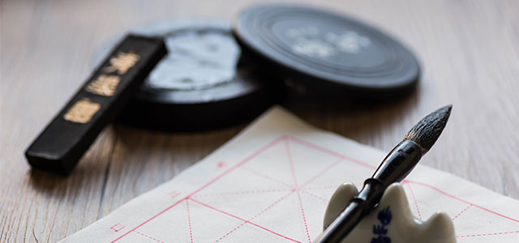

社区
交易
无
二
古
技
洋
艺
觉
今

十月艺术专题
传统工艺焕新生
新生创意
最新内容
更多
{{n1.nick}}
签约
{{n1.title}}
{{n1.tags}}
最热门内容
更多
{{n11.nick}}
签约
{{n11.title}}
{{n11.tags}}
十月艺术专题
传统工艺焕新生
新生创意
最新内容
更多
{{n2.nick}}
签约
{{n2.title}}
{{n2.tags}}
最热门内容
更多
{{n22.nick}}
签约
{{n22.title}}
{{n22.tags}}
十月艺术专题
传统工艺焕新生
新生创意
最新内容
更多
{{n3.nick}}
签约
{{n3.title}}
{{n3.tags}}
最热门内容
更多
{{n33.nick}}
签约
{{n33.title}}
{{n33.tags}}
十月艺术专题
传统工艺焕新生
新生创意
最新内容
更多
{{n4.nick}}
签约
{{n4.title}}
{{n4.tags}}
最热门内容
更多
{{n44.nick}}
签约
{{n44.title}}
{{n44.tags}}
独
古
今
中
外
推荐
更多
原创
{{r.good_name}}
工期：
{{r.maf_time}}
天
{{r.nick}}
￥{{r.price}}
新品
更多
原创
{{news.good_name}}
工期：
{{news.maf_time}}
天
{{news.nick}}
￥{{news.price}}
热门
更多
原创
{{h.good_name}}
工期：
{{h.maf_time}}
天
{{h.nick}}
￥{{h.price}}